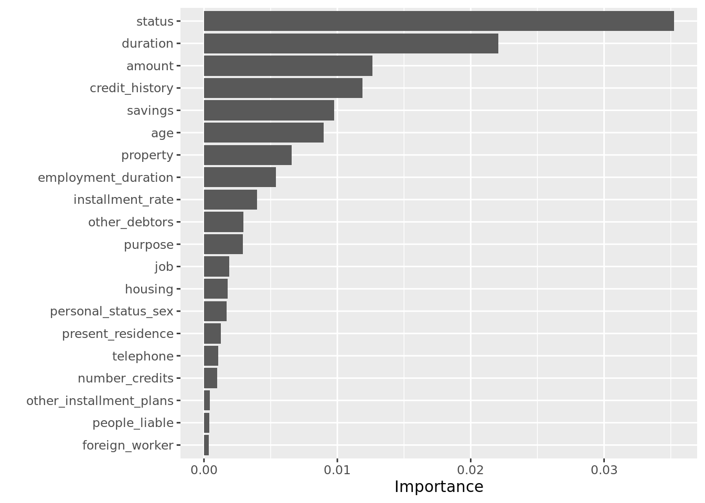
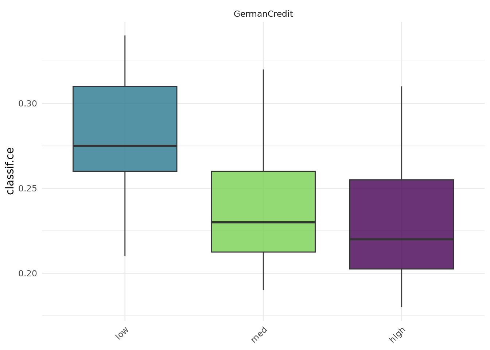

library("mlr3verse")
library("mlr3learners")
library("mlr3tuning")
library("data.table")
library("ggplot2")
lgr::get_logger("mlr3")$set_threshold("warn")Intro
This is the first part in a serial of tutorials. The other parts of this series can be found here:
We will walk through this tutorial interactively. The text is kept short to be followed in real time.
Prerequisites
Ensure all packages used in this tutorial are installed. This includes the mlr3verse package, as well as other packages for data handling, cleaning and visualization which we are going to use (data.table, ggplot2, rchallenge, and skimr).
Then, load the main packages we are going to use:
Machine Learning Use Case: German Credit Data
The German credit data was originally donated in 1994 by Prof. Dr. Hans Hoffman of the University of Hamburg. A description can be found at the UCI repository. The goal is to classify people by their credit risk (good or bad) using 20 personal, demographic and financial features:
| Feature Name | Description |
|---|---|
| age | age in years |
| amount | amount asked by applicant |
| credit_history | past credit history of applicant at this bank |
| duration | duration of the credit in months |
| employment_duration | present employment since |
| foreign_worker | is applicant foreign worker? |
| housing | type of apartment rented, owned, for free / no payment |
| installment_rate | installment rate in percentage of disposable income |
| job | current job information |
| number_credits | number of existing credits at this bank |
| other_debtors | other debtors/guarantors present? |
| other_installment_plans | other installment plans the applicant is paying |
| people_liable | number of people being liable to provide maintenance |
| personal_status_sex | combination of sex and personal status of applicant |
| present_residence | present residence since |
| property | properties that applicant has |
| purpose | reason customer is applying for a loan |
| savings | savings accounts/bonds at this bank |
| status | status/balance of checking account at this bank |
| telephone | is there any telephone registered for this customer? |
Importing the Data
The dataset we are going to use is a transformed version of this German credit dataset, as provided by the rchallenge package (this transformed dataset was proposed by Ulrike Grömping, with factors instead of dummy variables and corrected features):
data("german", package = "rchallenge")First, we’ll do a thorough investigation of the dataset.
Exploring the Data
We can get a quick overview of our dataset using R’s summary function:
dim(german)[1] 1000 21str(german)'data.frame': 1000 obs. of 21 variables:
$ status : Factor w/ 4 levels "no checking account",..: 1 1 2 1 1 1 1 1 4 2 ...
$ duration : int 18 9 12 12 12 10 8 6 18 24 ...
$ credit_history : Factor w/ 5 levels "delay in paying off in the past",..: 5 5 3 5 5 5 5 5 5 3 ...
$ purpose : Factor w/ 11 levels "others","car (new)",..: 3 1 10 1 1 1 1 1 4 4 ...
$ amount : int 1049 2799 841 2122 2171 2241 3398 1361 1098 3758 ...
$ savings : Factor w/ 5 levels "unknown/no savings account",..: 1 1 2 1 1 1 1 1 1 3 ...
$ employment_duration : Factor w/ 5 levels "unemployed","< 1 yr",..: 2 3 4 3 3 2 4 2 1 1 ...
$ installment_rate : Ord.factor w/ 4 levels ">= 35"<"25 <= ... < 35"<..: 4 2 2 3 4 1 1 2 4 1 ...
$ personal_status_sex : Factor w/ 4 levels "male : divorced/separated",..: 2 3 2 3 3 3 3 3 2 2 ...
$ other_debtors : Factor w/ 3 levels "none","co-applicant",..: 1 1 1 1 1 1 1 1 1 1 ...
$ present_residence : Ord.factor w/ 4 levels "< 1 yr"<"1 <= ... < 4 yrs"<..: 4 2 4 2 4 3 4 4 4 4 ...
$ property : Factor w/ 4 levels "unknown / no property",..: 2 1 1 1 2 1 1 1 3 4 ...
$ age : int 21 36 23 39 38 48 39 40 65 23 ...
$ other_installment_plans: Factor w/ 3 levels "bank","stores",..: 3 3 3 3 1 3 3 3 3 3 ...
$ housing : Factor w/ 3 levels "for free","rent",..: 1 1 1 1 2 1 2 2 2 1 ...
$ number_credits : Ord.factor w/ 4 levels "1"<"2-3"<"4-5"<..: 1 2 1 2 2 2 2 1 2 1 ...
$ job : Factor w/ 4 levels "unemployed/unskilled - non-resident",..: 3 3 2 2 2 2 2 2 1 1 ...
$ people_liable : Factor w/ 2 levels "3 or more","0 to 2": 2 1 2 1 2 1 2 1 2 2 ...
$ telephone : Factor w/ 2 levels "no","yes (under customer name)": 1 1 1 1 1 1 1 1 1 1 ...
$ foreign_worker : Factor w/ 2 levels "yes","no": 2 2 2 1 1 1 1 1 2 2 ...
$ credit_risk : Factor w/ 2 levels "bad","good": 2 2 2 2 2 2 2 2 2 2 ...Our dataset has 1000 observations and 21 columns. The variable we want to predict is credit_risk (either good or bad), i.e., we aim to classify people by their credit risk.
We also recommend the skimr package as it creates very well readable and understandable overviews:
skimr::skim(german)| Name | german |
| Number of rows | 1000 |
| Number of columns | 21 |
| _______________________ | |
| Column type frequency: | |
| factor | 18 |
| numeric | 3 |
| ________________________ | |
| Group variables | None |
Variable type: factor
| skim_variable | n_missing | complete_rate | ordered | n_unique | top_counts |
|---|---|---|---|---|---|
| status | 0 | 1 | FALSE | 4 | …: 394, no : 274, …: 269, 0<=: 63 |
| credit_history | 0 | 1 | FALSE | 5 | no : 530, all: 293, exi: 88, cri: 49 |
| purpose | 0 | 1 | FALSE | 10 | fur: 280, oth: 234, car: 181, car: 103 |
| savings | 0 | 1 | FALSE | 5 | unk: 603, …: 183, …: 103, 100: 63 |
| employment_duration | 0 | 1 | FALSE | 5 | 1 <: 339, >= : 253, 4 <: 174, < 1: 172 |
| installment_rate | 0 | 1 | TRUE | 4 | < 2: 476, 25 : 231, 20 : 157, >= : 136 |
| personal_status_sex | 0 | 1 | FALSE | 4 | mal: 548, fem: 310, fem: 92, mal: 50 |
| other_debtors | 0 | 1 | FALSE | 3 | non: 907, gua: 52, co-: 41 |
| present_residence | 0 | 1 | TRUE | 4 | >= : 413, 1 <: 308, 4 <: 149, < 1: 130 |
| property | 0 | 1 | FALSE | 4 | bui: 332, unk: 282, car: 232, rea: 154 |
| other_installment_plans | 0 | 1 | FALSE | 3 | non: 814, ban: 139, sto: 47 |
| housing | 0 | 1 | FALSE | 3 | ren: 714, for: 179, own: 107 |
| number_credits | 0 | 1 | TRUE | 4 | 1: 633, 2-3: 333, 4-5: 28, >= : 6 |
| job | 0 | 1 | FALSE | 4 | ski: 630, uns: 200, man: 148, une: 22 |
| people_liable | 0 | 1 | FALSE | 2 | 0 t: 845, 3 o: 155 |
| telephone | 0 | 1 | FALSE | 2 | no: 596, yes: 404 |
| foreign_worker | 0 | 1 | FALSE | 2 | no: 963, yes: 37 |
| credit_risk | 0 | 1 | FALSE | 2 | goo: 700, bad: 300 |
Variable type: numeric
| skim_variable | n_missing | complete_rate | mean | sd | p0 | p25 | p50 | p75 | p100 | hist |
|---|---|---|---|---|---|---|---|---|---|---|
| duration | 0 | 1 | 20.90 | 12.06 | 4 | 12.0 | 18.0 | 24.00 | 72 | ▇▇▂▁▁ |
| amount | 0 | 1 | 3271.25 | 2822.75 | 250 | 1365.5 | 2319.5 | 3972.25 | 18424 | ▇▂▁▁▁ |
| age | 0 | 1 | 35.54 | 11.35 | 19 | 27.0 | 33.0 | 42.00 | 75 | ▇▆▃▁▁ |
During an exploratory analysis meaningful discoveries could be:
- Skewed distributions
- Missing values
- Empty / rare factor variables
An explanatory analysis is crucial to get a feeling for your data. On the other hand the data can be validated this way. Non-plausible data can be investigated or outliers can be removed.
After feeling confident with the data, we want to do modeling now.
Modeling
Considering how we are going to tackle the problem of classifying the credit risk relates closely to what mlr3 entities we will use.
The typical questions that arise when building a machine learning workflow are:
- What is the problem we are trying to solve?
- What are appropriate learning algorithms?
- How do we evaluate “good” performance?
More systematically in mlr3 they can be expressed via five components:
- The
Taskdefinition. - The
Learnerdefinition. - The training.
- The prediction.
- The evaluation via one or multiple
Measures.
Task Definition
First, we are interested in the target which we want to model. Most supervised machine learning problems are regression or classification problems. However, note that other problems include unsupervised learning or time-to-event data (covered in mlr3proba).
Within mlr3, to distinguish between these problems, we define Tasks. If we want to solve a classification problem, we define a classification task – TaskClassif. For a regression problem, we define a regression task – TaskRegr.
In our case it is clearly our objective to model or predict the binary factor variable credit_risk. Thus, we define a TaskClassif:
task = as_task_classif(german, id = "GermanCredit", target = "credit_risk")Note that the German credit data is also given as an example task which ships with the mlr3 package. Thus, you actually don’t need to construct it yourself, just call tsk("german_credit") to retrieve the object from the dictionary mlr_tasks.
Learner Definition
After having decided what should be modeled, we need to decide on how. This means we need to decide which learning algorithms, or Learners are appropriate. Using prior knowledge (e.g. knowing that it is a classification task or assuming that the classes are linearly separable) one ends up with one or more suitable Learners.
Many learners can be obtained via the mlr3learners package. Additionally, many learners are provided via the mlr3extralearners package, from GitHub. These two resources combined account for a large fraction of standard learning algorithms. As mlr3 usually only wraps learners from packages, it is even easy to create a formal Learner by yourself. You may find the section about extending mlr3 in the mlr3book very helpful. If you happen to write your own Learner in mlr3, we would be happy if you share it with the mlr3 community.
All available Learners (i.e. all which you have installed from mlr3, mlr3learners, mlr3extralearners, or self-written ones) are registered in the dictionary mlr_learners:
mlr_learners<DictionaryLearner> with 134 stored values
Keys: classif.AdaBoostM1, classif.bart, classif.C50, classif.catboost, classif.cforest, classif.ctree,
classif.cv_glmnet, classif.debug, classif.earth, classif.featureless, classif.fnn, classif.gam,
classif.gamboost, classif.gausspr, classif.gbm, classif.glmboost, classif.glmer, classif.glmnet,
classif.IBk, classif.J48, classif.JRip, classif.kknn, classif.ksvm, classif.lda, classif.liblinear,
classif.lightgbm, classif.LMT, classif.log_reg, classif.lssvm, classif.mob, classif.multinom,
classif.naive_bayes, classif.nnet, classif.OneR, classif.PART, classif.qda, classif.randomForest,
classif.ranger, classif.rfsrc, classif.rpart, classif.svm, classif.xgboost, clust.agnes, clust.ap,
clust.cmeans, clust.cobweb, clust.dbscan, clust.diana, clust.em, clust.fanny, clust.featureless,
clust.ff, clust.hclust, clust.kkmeans, clust.kmeans, clust.MBatchKMeans, clust.mclust, clust.meanshift,
clust.pam, clust.SimpleKMeans, clust.xmeans, dens.kde_ks, dens.locfit, dens.logspline, dens.mixed,
dens.nonpar, dens.pen, dens.plug, dens.spline, regr.bart, regr.catboost, regr.cforest, regr.ctree,
regr.cubist, regr.cv_glmnet, regr.debug, regr.earth, regr.featureless, regr.fnn, regr.gam, regr.gamboost,
regr.gausspr, regr.gbm, regr.glm, regr.glmboost, regr.glmnet, regr.IBk, regr.kknn, regr.km, regr.ksvm,
regr.liblinear, regr.lightgbm, regr.lm, regr.lmer, regr.M5Rules, regr.mars, regr.mob, regr.nnet,
regr.randomForest, regr.ranger, regr.rfsrc, regr.rpart, regr.rsm, regr.rvm, regr.svm, regr.xgboost,
surv.akritas, surv.aorsf, surv.blackboost, surv.cforest, surv.coxboost, surv.coxtime, surv.ctree,
surv.cv_coxboost, surv.cv_glmnet, surv.deephit, surv.deepsurv, surv.dnnsurv, surv.flexible,
surv.gamboost, surv.gbm, surv.glmboost, surv.glmnet, surv.loghaz, surv.mboost, surv.nelson,
surv.obliqueRSF, surv.parametric, surv.pchazard, surv.penalized, surv.ranger, surv.rfsrc, surv.svm,
surv.xgboostFor our problem, a suitable learner could be one of the following: Logistic regression, CART, random forest (or many more).
A learner can be initialized with the lrn() function and the name of the learner, e.g., lrn("classif.xxx"). Use ?mlr_learners_xxx to open the help page of a learner named xxx.
For example, a logistic regression can be initialized in the following manner (logistic regression uses R’s glm() function and is provided by the mlr3learners package):
library("mlr3learners")
learner_logreg = lrn("classif.log_reg")
print(learner_logreg)<LearnerClassifLogReg:classif.log_reg>
* Model: -
* Parameters: list()
* Packages: mlr3, mlr3learners, stats
* Predict Types: [response], prob
* Feature Types: logical, integer, numeric, character, factor, ordered
* Properties: loglik, twoclassTraining
Training is the procedure, where a model is fitted on the (training) data.
Logistic Regression
We start with the example of the logistic regression. However, you will immediately see that the procedure generalizes to any learner very easily.
An initialized learner can be trained on data using $train():
learner_logreg$train(task)Typically, in machine learning, one does not use the full data which is available but a subset, the so-called training data.
To efficiently perform a split of the data one could do the following:
train_set = sample(task$row_ids, 0.8 * task$nrow)
test_set = setdiff(task$row_ids, train_set)80 percent of the data is used for training. The remaining 20 percent are used for evaluation at a subsequent later point in time. train_set is an integer vector referring to the selected rows of the original dataset:
head(train_set)[1] 836 679 129 930 509 471In mlr3 the training with a subset of the data can be declared by the additional argument row_ids = train_set:
learner_logreg$train(task, row_ids = train_set)The fitted model can be accessed via:
learner_logreg$model
Call: stats::glm(formula = task$formula(), family = "binomial", data = data,
model = FALSE)
Coefficients:
(Intercept) age
0.0688846 -0.0159818
amount credit_historycritical account/other credits elsewhere
0.0001329 0.4580373
credit_historyno credits taken/all credits paid back duly credit_historyexisting credits paid back duly till now
-0.5087518 -1.0249187
credit_historyall credits at this bank paid back duly duration
-1.5582920 0.0360543
employment_duration< 1 yr employment_duration1 <= ... < 4 yrs
0.0720620 -0.1262893
employment_duration4 <= ... < 7 yrs employment_duration>= 7 yrs
-0.5589136 -0.1545512
foreign_workerno housingrent
1.3647905 -0.6199554
housingown installment_rate.L
-0.6851413 0.8838467
installment_rate.Q installment_rate.C
-0.0385000 -0.1072466
jobunskilled - resident jobskilled employee/official
0.9797910 0.7657897
jobmanager/self-empl./highly qualif. employee number_credits.L
0.5793418 0.4081443
number_credits.Q number_credits.C
-0.3386148 -0.0262034
other_debtorsco-applicant other_debtorsguarantor
0.4995457 -0.4840799
other_installment_plansstores other_installment_plansnone
0.1844457 -0.2035917
people_liable0 to 2 personal_status_sexfemale : non-single or male : single
-0.2306212 -0.2797497
personal_status_sexmale : married/widowed personal_status_sexfemale : single
-0.7947385 -0.4173530
present_residence.L present_residence.Q
0.0948244 -0.4654771
present_residence.C propertycar or other
0.2317025 0.2583020
propertybuilding soc. savings agr./life insurance propertyreal estate
0.2595201 0.6821534
purposecar (new) purposecar (used)
-1.5120761 -0.6224479
purposefurniture/equipment purposeradio/television
-0.7776132 -0.1649750
purposedomestic appliances purposerepairs
0.1966830 0.3824875
purposevacation purposeretraining
-1.9184037 -0.9364954
purposebusiness savings... < 100 DM
-1.2647440 -0.2148135
savings100 <= ... < 500 DM savings500 <= ... < 1000 DM
-0.5445696 -1.4241969
savings... >= 1000 DM status... < 0 DM
-1.0478097 -0.4584854
status0<= ... < 200 DM status... >= 200 DM / salary for at least 1 year
-0.8798435 -1.7552018
telephoneyes (under customer name)
-0.1798432
Degrees of Freedom: 799 Total (i.e. Null); 745 Residual
Null Deviance: 980.7
Residual Deviance: 702.6 AIC: 812.6The stored object is a normal glm object and all its S3 methods work as expected:
class(learner_logreg$model)[1] "glm" "lm" summary(learner_logreg$model)
Call:
stats::glm(formula = task$formula(), family = "binomial", data = data,
model = FALSE)
Deviance Residuals:
Min 1Q Median 3Q Max
-2.3992 -0.6812 -0.3642 0.6939 2.7540
Coefficients:
Estimate Std. Error z value Pr(>|z|)
(Intercept) 0.0688846 1.3333299 0.052 0.958797
age -0.0159818 0.0105444 -1.516 0.129605
amount 0.0001329 0.0000502 2.647 0.008110 **
credit_historycritical account/other credits elsewhere 0.4580373 0.6523911 0.702 0.482623
credit_historyno credits taken/all credits paid back duly -0.5087518 0.4802925 -1.059 0.289484
credit_historyexisting credits paid back duly till now -1.0249188 0.5343038 -1.918 0.055082 .
credit_historyall credits at this bank paid back duly -1.5582920 0.4858084 -3.208 0.001338 **
duration 0.0360543 0.0106583 3.383 0.000718 ***
employment_duration< 1 yr 0.0720620 0.4845297 0.149 0.881770
employment_duration1 <= ... < 4 yrs -0.1262893 0.4577516 -0.276 0.782632
employment_duration4 <= ... < 7 yrs -0.5589136 0.5016876 -1.114 0.265250
employment_duration>= 7 yrs -0.1545512 0.4625121 -0.334 0.738262
foreign_workerno 1.3647905 0.6425196 2.124 0.033660 *
housingrent -0.6199554 0.2705326 -2.292 0.021928 *
housingown -0.6851413 0.5581021 -1.228 0.219587
installment_rate.L 0.8838467 0.2472850 3.574 0.000351 ***
installment_rate.Q -0.0385001 0.2217440 -0.174 0.862161
installment_rate.C -0.1072466 0.2281857 -0.470 0.638357
jobunskilled - resident 0.9797910 0.7877153 1.244 0.213559
jobskilled employee/official 0.7657897 0.7627061 1.004 0.315358
jobmanager/self-empl./highly qualif. employee 0.5793418 0.7790492 0.744 0.457087
number_credits.L 0.4081443 0.7356488 0.555 0.579026
number_credits.Q -0.3386148 0.6189845 -0.547 0.584345
number_credits.C -0.0262034 0.4717322 -0.056 0.955703
other_debtorsco-applicant 0.4995457 0.4504675 1.109 0.267452
other_debtorsguarantor -0.4840799 0.4744964 -1.020 0.307635
other_installment_plansstores 0.1844457 0.4733765 0.390 0.696804
other_installment_plansnone -0.2035917 0.2881916 -0.706 0.479911
people_liable0 to 2 -0.2306212 0.2905750 -0.794 0.427386
personal_status_sexfemale : non-single or male : single -0.2797497 0.4602069 -0.608 0.543268
personal_status_sexmale : married/widowed -0.7947384 0.4513890 -1.761 0.078297 .
personal_status_sexfemale : single -0.4173530 0.5348044 -0.780 0.435165
present_residence.L 0.0948244 0.2496873 0.380 0.704114
present_residence.Q -0.4654771 0.2293239 -2.030 0.042379 *
present_residence.C 0.2317025 0.2240902 1.034 0.301150
propertycar or other 0.2583020 0.2934956 0.880 0.378812
propertybuilding soc. savings agr./life insurance 0.2595201 0.2712751 0.957 0.338735
propertyreal estate 0.6821535 0.4931574 1.383 0.166592
purposecar (new) -1.5120761 0.4173677 -3.623 0.000291 ***
purposecar (used) -0.6224479 0.2979802 -2.089 0.036718 *
purposefurniture/equipment -0.7776132 0.2803938 -2.773 0.005549 **
purposeradio/television -0.1649750 0.8289212 -0.199 0.842244
purposedomestic appliances 0.1966830 0.6322897 0.311 0.755751
purposerepairs 0.3824875 0.4657037 0.821 0.411469
purposevacation -1.9184037 1.1948196 -1.606 0.108362
purposeretraining -0.9364954 0.4014654 -2.333 0.019664 *
purposebusiness -1.2647440 0.8064326 -1.568 0.116807
savings... < 100 DM -0.2148135 0.3235401 -0.664 0.506724
savings100 <= ... < 500 DM -0.5445696 0.5037257 -1.081 0.279660
savings500 <= ... < 1000 DM -1.4241969 0.6223390 -2.288 0.022111 *
savings... >= 1000 DM -1.0478097 0.3067055 -3.416 0.000635 ***
status... < 0 DM -0.4584854 0.2481344 -1.848 0.064641 .
status0<= ... < 200 DM -0.8798435 0.4219102 -2.085 0.037035 *
status... >= 200 DM / salary for at least 1 year -1.7552018 0.2629099 -6.676 2.45e-11 ***
telephoneyes (under customer name) -0.1798432 0.2322797 -0.774 0.438781
---
Signif. codes: 0 '***' 0.001 '**' 0.01 '*' 0.05 '.' 0.1 ' ' 1
(Dispersion parameter for binomial family taken to be 1)
Null deviance: 980.75 on 799 degrees of freedom
Residual deviance: 702.58 on 745 degrees of freedom
AIC: 812.58
Number of Fisher Scoring iterations: 5Random Forest
Just like the logistic regression, we could train a random forest instead. We use the fast implementation from the ranger package. For this, we first need to define the learner and then actually train it.
We now additionally supply the importance argument (importance = "permutation"). Doing so, we override the default and let the learner do feature importance determination based on permutation feature importance:
learner_rf = lrn("classif.ranger", importance = "permutation")
learner_rf$train(task, row_ids = train_set)We can access the importance values using $importance():
learner_rf$importance() status duration amount credit_history savings
0.0352305897 0.0220794319 0.0126390139 0.0118909925 0.0097629159
age property employment_duration installment_rate other_debtors
0.0089588614 0.0065744135 0.0054059438 0.0039772325 0.0029554567
purpose job housing personal_status_sex present_residence
0.0029153698 0.0019001816 0.0017784386 0.0016809300 0.0012840096
telephone number_credits other_installment_plans people_liable foreign_worker
0.0010803276 0.0009842075 0.0004556746 0.0003807613 0.0003657158 In order to obtain a plot for the importance values, we convert the importance to a data.table and then process it with ggplot2:
importance = as.data.table(learner_rf$importance(), keep.rownames = TRUE)
colnames(importance) = c("Feature", "Importance")
ggplot(importance, aes(x = reorder(Feature, Importance), y = Importance)) +
geom_col() + coord_flip() + xlab("")
Prediction
Let’s see what the models predict.
After training a model, the model can be used for prediction. Usually, prediction is the main purpose of machine learning models.
In our case, the model can be used to classify new credit applicants w.r.t. their associated credit risk (good vs. bad) on the basis of the features. Typically, machine learning models predict numeric values. In the regression case this is very natural. For classification, most models predict scores or probabilities. Based on these values, one can derive class predictions.
Predict Classes
First, we directly predict classes:
prediction_logreg = learner_logreg$predict(task, row_ids = test_set)
prediction_rf = learner_rf$predict(task, row_ids = test_set)prediction_logreg<PredictionClassif> for 200 observations:
row_ids truth response
18 good good
23 bad bad
26 good good
---
996 bad good
997 bad bad
1000 bad goodprediction_rf<PredictionClassif> for 200 observations:
row_ids truth response
18 good good
23 bad bad
26 good good
---
996 bad bad
997 bad good
1000 bad goodThe $predict() method returns a Prediction object. It can be converted to a data.table if one wants to use it downstream.
We can also display the prediction results aggregated in a confusion matrix:
prediction_logreg$confusion truth
response bad good
bad 28 17
good 30 125prediction_rf$confusion truth
response bad good
bad 24 13
good 34 129Predict Probabilities
Most learners may not only predict a class variable (“response”), but also their degree of “belief” / “uncertainty” in a given response. Typically, we achieve this by setting the $predict_type slot of a Learner to "prob". Sometimes this needs to be done before the learner is trained. Alternatively, we can directly create the learner with this option: lrn("classif.log_reg", predict_type = "prob").
learner_logreg$predict_type = "prob"learner_logreg$predict(task, row_ids = test_set)<PredictionClassif> for 200 observations:
row_ids truth response prob.bad prob.good
18 good good 0.24602549 0.7539745
23 bad bad 0.88286383 0.1171362
26 good good 0.05730414 0.9426959
---
996 bad good 0.49783778 0.5021622
997 bad bad 0.59947093 0.4005291
1000 bad good 0.42568263 0.5743174Note that sometimes one needs to be cautious when dealing with the probability interpretation of the predictions.
Performance Evaluation
To measure the performance of a learner on new unseen data, we usually mimic the scenario of unseen data by splitting up the data into training and test set. The training set is used for training the learner, and the test set is only used for predicting and evaluating the performance of the trained learner. Numerous resampling methods (cross-validation, bootstrap) repeat the splitting process in different ways.
Within mlr3, we need to specify the resampling strategy using the rsmp() function:
resampling = rsmp("holdout", ratio = 2/3)
print(resampling)<ResamplingHoldout>: Holdout
* Iterations: 1
* Instantiated: FALSE
* Parameters: ratio=0.6667Here, we use “holdout”, a simple train-test split (with just one iteration). We use the resample() function to undertake the resampling calculation:
res = resample(task, learner = learner_logreg, resampling = resampling)
res<ResampleResult> of 1 iterations
* Task: GermanCredit
* Learner: classif.log_reg
* Warnings: 0 in 0 iterations
* Errors: 0 in 0 iterationsThe default score of the measure is included in the $aggregate() slot:
res$aggregate()classif.ce
0.2432432 The default measure in this scenario is the classification error. Lower is better.
We can easily run different resampling strategies, e.g. repeated holdout ("subsampling"), or cross validation. Most methods perform repeated train/predict cycles on different data subsets and aggregate the result (usually as the mean). Doing this manually would require us to write loops. mlr3 does the job for us:
resampling = rsmp("subsampling", repeats = 10)
rr = resample(task, learner = learner_logreg, resampling = resampling)
rr$aggregate()classif.ce
0.2474474 Instead, we could also run cross-validation:
resampling = resampling = rsmp("cv", folds = 10)
rr = resample(task, learner = learner_logreg, resampling = resampling)
rr$aggregate()classif.ce
0.257 mlr3 features scores for many more measures. Here, we apply mlr_measures_classif.fpr for the false positive rate, and mlr_measures_classif.fnr for the false negative rate. Multiple measures can be provided as a list of measures (which can directly be constructed via msrs():
# false positive rate
rr$aggregate(msr("classif.fpr"))classif.fpr
0.1472895 # false positive rate and false negative
measures = msrs(c("classif.fpr", "classif.fnr"))
rr$aggregate(measures)classif.fpr classif.fnr
0.1472895 0.5197922 There are a few more resampling methods, and quite a few more measures (implemented in mlr3measures). They are automatically registered in the respective dictionaries:
mlr_resamplings<DictionaryResampling> with 9 stored values
Keys: bootstrap, custom, custom_cv, cv, holdout, insample, loo, repeated_cv, subsamplingmlr_measures<DictionaryMeasure> with 67 stored values
Keys: aic, bic, classif.acc, classif.auc, classif.bacc, classif.bbrier, classif.ce, classif.costs,
classif.dor, classif.fbeta, classif.fdr, classif.fn, classif.fnr, classif.fomr, classif.fp, classif.fpr,
classif.logloss, classif.mauc_au1p, classif.mauc_au1u, classif.mauc_aunp, classif.mauc_aunu,
classif.mbrier, classif.mcc, classif.npv, classif.ppv, classif.prauc, classif.precision, classif.recall,
classif.sensitivity, classif.specificity, classif.tn, classif.tnr, classif.tp, classif.tpr, clust.ch,
clust.db, clust.dunn, clust.silhouette, clust.wss, debug_classif, oob_error, regr.bias, regr.ktau,
regr.mae, regr.mape, regr.maxae, regr.medae, regr.medse, regr.mse, regr.msle, regr.pbias, regr.rae,
regr.rmse, regr.rmsle, regr.rrse, regr.rse, regr.rsq, regr.sae, regr.smape, regr.srho, regr.sse,
selected_features, sim.jaccard, sim.phi, time_both, time_predict, time_trainTo get help on a resampling method, use ?mlr_resamplings_xxx, for a measure do ?mlr_measures_xxx. You can also browse the mlr3 reference online.
Note that some measures, for example AUC, require the prediction of probabilities.
Performance Comparison and Benchmarks
We could compare Learners by evaluating resample() for each of them manually. However, benchmark() automatically performs resampling evaluations for multiple learners and tasks. benchmark_grid() creates fully crossed designs: Multiple Learners for multiple Tasks are compared w.r.t. multiple Resamplings.
learners = lrns(c("classif.log_reg", "classif.ranger"), predict_type = "prob")
grid = benchmark_grid(
tasks = task,
learners = learners,
resamplings = rsmp("cv", folds = 10)
)
bmr = benchmark(grid)Careful, large benchmarks may take a long time! This one should take less than a minute, however. In general, we want to use parallelization to speed things up on multi-core machines. For parallelization, mlr3 relies on the future package:
# future::plan("multicore") # uncomment for parallelizationIn the benchmark we can compare different measures. Here, we look at the misclassification rate and the AUC:
measures = msrs(c("classif.ce", "classif.auc"))
performances = bmr$aggregate(measures)
performances[, c("learner_id", "classif.ce", "classif.auc")] learner_id classif.ce classif.auc
1: classif.log_reg 0.250 0.7646559
2: classif.ranger 0.239 0.7977865We see that the two models perform very similarly.
Deviating from hyperparameters defaults
The previously shown techniques build the backbone of a mlr3-featured machine learning workflow. However, in most cases one would never proceed in the way we did. While many R packages have carefully selected default settings, they will not perform optimally in any scenario. Typically, we can select the values of such hyperparameters. The (hyper)parameters of a Learner can be accessed and set via its ParamSet $param_set:
learner_rf$param_set<ParamSet>
id class lower upper nlevels default parents value
1: alpha ParamDbl -Inf Inf Inf 0.5
2: always.split.variables ParamUty NA NA Inf <NoDefault[3]>
3: class.weights ParamUty NA NA Inf
4: holdout ParamLgl NA NA 2 FALSE
5: importance ParamFct NA NA 4 <NoDefault[3]> permutation
6: keep.inbag ParamLgl NA NA 2 FALSE
7: max.depth ParamInt 0 Inf Inf
8: min.node.size ParamInt 1 Inf Inf
9: min.prop ParamDbl -Inf Inf Inf 0.1
10: minprop ParamDbl -Inf Inf Inf 0.1
11: mtry ParamInt 1 Inf Inf <NoDefault[3]>
12: mtry.ratio ParamDbl 0 1 Inf <NoDefault[3]>
13: num.random.splits ParamInt 1 Inf Inf 1 splitrule
14: num.threads ParamInt 1 Inf Inf 1 1
15: num.trees ParamInt 1 Inf Inf 500
16: oob.error ParamLgl NA NA 2 TRUE
17: regularization.factor ParamUty NA NA Inf 1
18: regularization.usedepth ParamLgl NA NA 2 FALSE
19: replace ParamLgl NA NA 2 TRUE
20: respect.unordered.factors ParamFct NA NA 3 ignore
21: sample.fraction ParamDbl 0 1 Inf <NoDefault[3]>
22: save.memory ParamLgl NA NA 2 FALSE
23: scale.permutation.importance ParamLgl NA NA 2 FALSE importance
24: se.method ParamFct NA NA 2 infjack
25: seed ParamInt -Inf Inf Inf
26: split.select.weights ParamUty NA NA Inf
27: splitrule ParamFct NA NA 3 gini
28: verbose ParamLgl NA NA 2 TRUE
29: write.forest ParamLgl NA NA 2 TRUE
id class lower upper nlevels default parents valuelearner_rf$param_set$values = list(verbose = FALSE)We can choose parameters for our learners in two distinct manners. If we have prior knowledge on how the learner should be (hyper-)parameterized, the way to go would be manually entering the parameters in the parameter set. In most cases, however, we would want to tune the learner so that it can search “good” model configurations itself. For now, we only want to compare a few models.
To get an idea on which parameters can be manipulated, we can investigate the parameters of the original package version or look into the parameter set of the learner:
## ?ranger::ranger
as.data.table(learner_rf$param_set)[, .(id, class, lower, upper)] id class lower upper
1: alpha ParamDbl -Inf Inf
2: always.split.variables ParamUty NA NA
3: class.weights ParamUty NA NA
4: holdout ParamLgl NA NA
5: importance ParamFct NA NA
6: keep.inbag ParamLgl NA NA
7: max.depth ParamInt 0 Inf
8: min.node.size ParamInt 1 Inf
9: min.prop ParamDbl -Inf Inf
10: minprop ParamDbl -Inf Inf
11: mtry ParamInt 1 Inf
12: mtry.ratio ParamDbl 0 1
13: num.random.splits ParamInt 1 Inf
14: num.threads ParamInt 1 Inf
15: num.trees ParamInt 1 Inf
16: oob.error ParamLgl NA NA
17: regularization.factor ParamUty NA NA
18: regularization.usedepth ParamLgl NA NA
19: replace ParamLgl NA NA
20: respect.unordered.factors ParamFct NA NA
21: sample.fraction ParamDbl 0 1
22: save.memory ParamLgl NA NA
23: scale.permutation.importance ParamLgl NA NA
24: se.method ParamFct NA NA
25: seed ParamInt -Inf Inf
26: split.select.weights ParamUty NA NA
27: splitrule ParamFct NA NA
28: verbose ParamLgl NA NA
29: write.forest ParamLgl NA NA
id class lower upperFor the random forest two meaningful parameters which steer model complexity are num.trees and mtry. num.trees defaults to 500 and mtry to floor(sqrt(ncol(data) - 1)), in our case 4.
In the following we aim to train three different learners:
- The default random forest.
- A random forest with low
num.treesand lowmtry. - A random forest with high
num.treesand highmtry.
We will benchmark their performance on the German credit dataset. For this we construct the three learners and set the parameters accordingly:
rf_med = lrn("classif.ranger", id = "med", predict_type = "prob")
rf_low = lrn("classif.ranger", id = "low", predict_type = "prob",
num.trees = 5, mtry = 2)
rf_high = lrn("classif.ranger", id = "high", predict_type = "prob",
num.trees = 1000, mtry = 11)Once the learners are defined, we can benchmark them:
learners = list(rf_low, rf_med, rf_high)
grid = benchmark_grid(
tasks = task,
learners = learners,
resamplings = rsmp("cv", folds = 10)
)bmr = benchmark(grid)
print(bmr)<BenchmarkResult> of 30 rows with 3 resampling runs
nr task_id learner_id resampling_id iters warnings errors
1 GermanCredit low cv 10 0 0
2 GermanCredit med cv 10 0 0
3 GermanCredit high cv 10 0 0We compare misclassification rate and AUC again:
measures = msrs(c("classif.ce", "classif.auc"))
performances = bmr$aggregate(measures)
performances[, .(learner_id, classif.ce, classif.auc)] learner_id classif.ce classif.auc
1: low 0.278 0.7287261
2: med 0.240 0.7973700
3: high 0.233 0.7891017autoplot(bmr)
The “low” settings seem to underfit a bit, the “high” setting is comparable to the default setting “med”.
Outlook
This tutorial was a detailed introduction to machine learning workflows within mlr3. Having followed this tutorial you should be able to run your first models yourself. Next to that we spiked into performance evaluation and benchmarking. Furthermore, we showed how to customize learners.
The next parts of the tutorial will go more into depth into additional mlr3 topics:
Part II - Tuning introduces you to the mlr3tuning package
Part III - Pipelines introduces you to the mlr3pipelines package